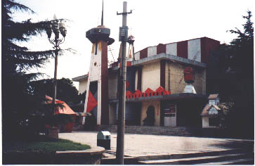
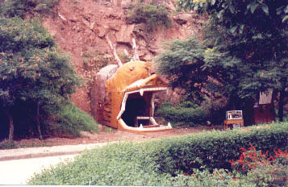

Urban Adventuring, Ballard style Urban Adventuring, Ballard style
When I first visited Shanghai, I was actively looking for Ballardian settings & trying to soak up the heavy "Empire of the Sun"-atmosphere which permeated the city. After a few days, I felt somewhat exhausted by sensory overload, and returned to my quiet base in Beijing. The day after I came back, I decided to take a little stroll in a park near my house. It was then that I realized that I wasn't making up the Ballardian landscapes myself. They were pursuing me!
Either something strange is going on or Ballard's vision is even more on target than I ever thought. Everywhere you go it just hits you in the face. I would like everybody to read at least three or four books by Ballard, keep his descriptions and language close to heart while going about their everyday business. Would they also confirm my findings - that Ballard's books are the best road map we have of the world we live in today, despite some of them being over 30 years old?

Now, what about that park in Beijing? I'll tell you. It is a half abandoned park in "Chaoyang Tourist Area", a place where no tourist has been spotted since the Ming dynasty. The paved paths in the park are flanked by all sorts of junk.
The main attraction is a lake, which is so polluted that the water close to the shore is almost solid. On the other side of the lake, you can enjoy the sight of a huge Bucky-ball (like those C60-molecules, you know) with loads of pipes attached to it. A beautiful spectacle. Further ahead, there is a cliff formation, quite nice in itself, but the disturbing thing about it is that somebody has carved twenty or thirty bizarre-looking monkeys out of it. The monkeys have been neglected, and so many of them have lost parts of their head or arms. Imagine the sight of a white cliff formation overrun by mutilated monkeys.
Next, you can climb a small hill whereupon are built two quaint houses in Classical Chinese style. From the hill, you have a nice view over the surroundings, consisting mainly of ramshackle huts and a narrow, polluted river. But wait ... What was that moving over there? Something furry in a run-down stall by the riverside. You presumably venture down from the hill, since there is nothing special up there anyway, at least now you have the chance to encounter organic life.

When you approach the stall, you see that two ragged camels are standing there. They seem not to have been cared for in a couple of years. They are skinny and authistic, they don't even react when you offer them some food, just stare at you with big bottomless eyes like dirty sphinxes.
At this point you might already want to leave the park. You steer toward the entrance, and pass a couple of dumbly staring, idle sanitary technicians on the way. The last glimpse of the park is a couple of very plastic/antique- looking statues of Chinese gods and goddesses.
Nobody will miss you or remember you after you have left.
I hereby nominate Chaoyang Park in Beijing as a candidate for the development of a J G Ballard Theme Park. Don't miss it!
by Mikael Huss